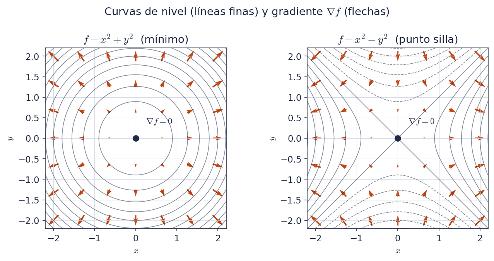
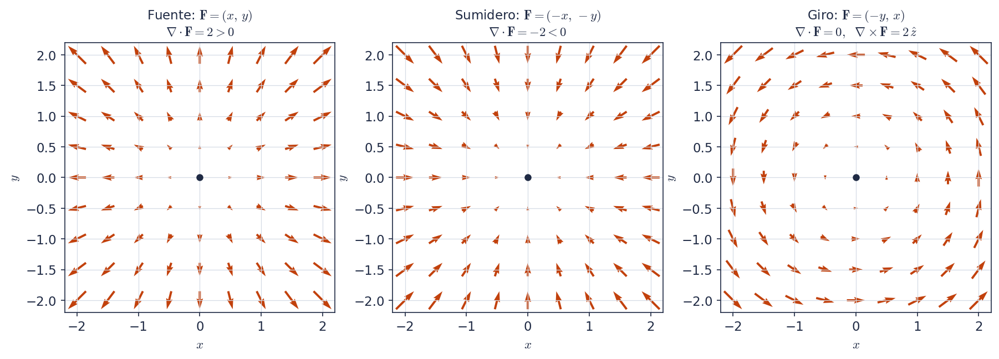

Física 3 · Sesión 1 · Notas manuscritas transcriptas, ordenadas y revisadas
Fuente original: originals/Math_toolkit01.pdf (4
páginas). Lo que escribiste vos aparece como texto normal. Todo lo que
cambié o agregué está en un recuadro con una etiqueta y un código que
coincide con el informe
reports/01-math-toolkit-changes.txt:
[Corregido · C0] Un error de las notas, arreglado. Indica qué decía y cómo queda.
[Aclarado · C0] Una frase imprecisa o ambigua, reformulada sin cambiar la idea.
[Añadido por Claude · A0] Contenido nuevo que no estaba en tus notas.
[Notación · N0] Cambio de símbolos para que todo el cuaderno use el mismo criterio.
Si algún recuadro no te convence, borralo y el texto de tus notas originales sigue siendo coherente.
En las notas se usan F, f y T para el mismo tipo de objeto. Para evitar confusiones usamos:
| Símbolo | Significa | Ejemplo |
|---|---|---|
| f,\ g | campo escalar (un número en cada punto) | f(x,y,z)=x^2+y^3+z^4 |
| \mathbf{F},\ \mathbf{A} | campo vectorial (un vector en cada punto) | \mathbf{F}=(F_x,\,F_y,\,F_z) |
| \hat{x},\ \hat{y},\ \hat{z} | vectores unitarios de los ejes | |
| p_0 | un punto fijo del espacio |
[Notación · N1] En tus notas, el campo escalar aparece a veces como F y a veces como T (gradiente y Laplaciano), y el campo vectorial aparece como T (divergencia y rotor). Acá el escalar es siempre f y el vectorial siempre \mathbf{F} (en negrita).
El operador nabla es
\nabla \;=\; \hat{x}\,\frac{\partial}{\partial x} \;+\; \hat{y}\,\frac{\partial}{\partial y} \;+\; \hat{z}\,\frac{\partial}{\partial z}
Es un operador diferencial vectorial: no es un vector común ni una función, sino algo que “espera” un campo para actuar sobre él. Según sobre qué actúa y cómo, da tres operaciones distintas:
| Operación | Se aplica a | Resultado | Notación |
|---|---|---|---|
| Gradiente | campo escalar f | campo vectorial | \nabla f |
| Divergencia | campo vectorial \mathbf{F} | campo escalar | \nabla\cdot\mathbf{F} |
| Rotor (curl) | campo vectorial \mathbf{F} | campo vectorial | \nabla\times\mathbf{F} |
[Corregido · C3] Tus notas escribían \nabla = \left[\tfrac{\partial}{\partial x};\tfrac{\partial}{\partial y};\tfrac{\partial}{\partial z}\right]\cdot\left[\hat{x};\hat{y};\hat{z}\right]. Es una suma de tres términos (derivada en cada eje por su vector unitario), no un producto escalar entre dos listas. Ver la fórmula de arriba.
[Aclarado · C11] En tus notas el caso ① dice “producto por escalar: \alpha\nabla T”. Lo que se hace es multiplicar \nabla por un campo escalar (eso es el gradiente). Si además hay una constante \alpha, vale la linealidad: \nabla(\alpha f)=\alpha\,\nabla f.
Para un campo escalar f(x,y,z):
\nabla f \;=\; \frac{\partial f}{\partial x}\,\hat{x} \;+\; \frac{\partial f}{\partial y}\,\hat{y} \;+\; \frac{\partial f}{\partial z}\,\hat{z}
Cada componente (derivada parcial) es la razón de cambio de f a lo largo de uno de los ejes. El gradiente apunta en la dirección de máximo crecimiento de f, y su módulo es la tasa de crecimiento (la pendiente) en esa dirección:
\lvert\nabla f\rvert \;=\; \sqrt{\left(\frac{\partial f}{\partial x}\right)^{2} + \left(\frac{\partial f}{\partial y}\right)^{2} + \left(\frac{\partial f}{\partial z}\right)^{2}}
[Corregido · C1] Tus notas decían que el gradiente “indica hacia dónde se encuentra el máximo cambio de pendiente”. Lo correcto es que indica hacia dónde crece más rápido la función (la pendiente es el módulo del gradiente, no lo que cambia).
[Corregido · C2] “Radio de crecimiento” pasa a “tasa de crecimiento” (rate, no radius).
Si \nabla f = \mathbf{0} en un punto (x,y,z), ese punto es un punto estacionario: puede ser un máximo local, un mínimo local o un punto silla.
[Añadido por Claude · A2] Tres datos que completan la idea:
- \nabla f=\mathbf{0} es condición necesaria para un extremo, pero no suficiente: por eso también existen los puntos silla.
- La derivada de f en la dirección de un vector unitario \hat{u} es D_{\hat{u}}f=\nabla f\cdot\hat{u}. Es máxima cuando \hat{u} apunta como \nabla f, y vale entonces \lvert\nabla f\rvert; eso justifica la interpretación de 3.1.
- El gradiente es perpendicular a las curvas (o superficies) de nivel de f, como se ve en la figura.

[Añadido por Claude · A1] La figura 1 no estaba en tus notas. Se genera con
figures/make_figures.py.
Dado f(x,y,z)=x^2+y^3+z^4:
\nabla f = \frac{\partial}{\partial x}\!\left(x^2+y^3+z^4\right)\hat{x} + \frac{\partial}{\partial y}\!\left(x^2+y^3+z^4\right)\hat{y} + \frac{\partial}{\partial z}\!\left(x^2+y^3+z^4\right)\hat{z}
\nabla f = (2x)\,\hat{x} + (3y^2)\,\hat{y} + (4z^3)\,\hat{z}
\boxed{\;\nabla f = \left(2x,\ 3y^2,\ 4z^3\right)\;}
[Añadido por Claude · A9] Comprobación numérica: en (1,2,1) queda \nabla f=(2,\,12,\,4) y \lvert\nabla f\rvert=\sqrt{2^2+12^2+4^2}=\sqrt{164}\approx 12{,}8. Además, \nabla f=\mathbf{0} solo en el origen.
Para un campo vectorial \mathbf{F}=(F_x,F_y,F_z):
\nabla\cdot\mathbf{F} \;=\; \frac{\partial F_x}{\partial x} + \frac{\partial F_y}{\partial y} + \frac{\partial F_z}{\partial z}
El resultado es un escalar: se pierde el carácter vectorial. La divergencia indica cuánto se esparce o diverge el campo desde un punto p_0:
| Signo | Qué se ve | Nombre del punto |
|---|---|---|
| \nabla\cdot\mathbf{F}(p_0)>0 | las flechas “apuntan” hacia afuera | fuente |
| \nabla\cdot\mathbf{F}(p_0)<0 | las flechas “apuntan” hacia adentro | sumidero |
| \nabla\cdot\mathbf{F}(p_0)=0 | sale tanto como entra | ni fuente ni sumidero |
[Corregido · C4] Tus notas escribían la divergencia como \tfrac{\partial T}{\partial x}+\tfrac{\partial T}{\partial y}+\tfrac{\partial T}{\partial z}, con el mismo símbolo T en los tres términos. Para un campo vectorial se deriva cada componente respecto de su propio eje (F_x respecto de x, etc.), como arriba.
[Aclarado · C5] Las notas decían que la divergencia “da una noción de la velocidad con la que nos movemos respecto a p_0”. Más precisamente: mide la tasa de expansión del campo, es decir, el flujo neto que sale de un entorno pequeño de p_0 por unidad de volumen.
[Corregido · C6] Las notas decían “\nabla\cdot\mathbf{T}\le 0 son sumideros”. El caso =0 no es un sumidero: ahí el flujo neto es nulo. Queda <0 para sumideros y =0 aparte.
\nabla\times\mathbf{F} \;=\; \begin{vmatrix} \hat{x} & \hat{y} & \hat{z} \\[2pt] \dfrac{\partial}{\partial x} & \dfrac{\partial}{\partial y} & \dfrac{\partial}{\partial z} \\[6pt] F_x & F_y & F_z \end{vmatrix}
Desarrollando el determinante por la primera fila:
\nabla\times\mathbf{F} = \left(\frac{\partial F_z}{\partial y}-\frac{\partial F_y}{\partial z}\right)\hat{x} \;-\; \left(\frac{\partial F_z}{\partial x}-\frac{\partial F_x}{\partial z}\right)\hat{y} \;+\; \left(\frac{\partial F_y}{\partial x}-\frac{\partial F_x}{\partial y}\right)\hat{z}
El rotor indica cuánto y cómo rota un campo alrededor de p_0.
[Añadido por Claude · A7] Cómo leer el resultado: la dirección de \nabla\times\mathbf{F} es el eje de giro, y el sentido sale de la regla de la mano derecha (los dedos siguen la rotación, el pulgar da la dirección). Su módulo mide la intensidad del giro: para una rotación rígida con velocidad angular \boldsymbol{\omega}, el rotor vale 2\boldsymbol{\omega}.

[Añadido por Claude · A3] La figura 2 no estaba en tus notas. Comprobá con las fórmulas: para \mathbf{F}=(-y,\,x,\,0), \nabla\cdot\mathbf{F}=0+0+0=0 y \nabla\times\mathbf{F}=\left(\tfrac{\partial x}{\partial x}-\tfrac{\partial(-y)}{\partial y}\right)\hat{z}=2\,\hat{z}.
[Añadido por Claude · A4] Tus notas pedían buscar las propiedades de los productos \cdot y \times y omitir esa línea. Acá están (ver Griffiths §1.1 y §1.2.6). La línea de pedido no se copió al cuaderno.
| Producto escalar \mathbf{A}\cdot\mathbf{B} | Producto vectorial \mathbf{A}\times\mathbf{B} | |
|---|---|---|
| Resultado | escalar | vector |
| En componentes | A_xB_x+A_yB_y+A_zB_z | determinante con \hat{x},\hat{y},\hat{z} |
| Geometría | \lvert\mathbf{A}\rvert\lvert\mathbf{B}\rvert\cos\theta | \lvert\mathbf{A}\rvert\lvert\mathbf{B}\rvert\sin\theta = área del paralelogramo; perpendicular a ambos (mano derecha) |
| Orden | conmutativo: \mathbf{A}\cdot\mathbf{B}=\mathbf{B}\cdot\mathbf{A} | anticonmutativo: \mathbf{A}\times\mathbf{B}=-\mathbf{B}\times\mathbf{A} |
| Distributivo | \mathbf{A}\cdot(\mathbf{B}+\mathbf{C})=\mathbf{A}\cdot\mathbf{B}+\mathbf{A}\cdot\mathbf{C} | \mathbf{A}\times(\mathbf{B}+\mathbf{C})=\mathbf{A}\times\mathbf{B}+\mathbf{A}\times\mathbf{C} |
| Consigo mismo | \mathbf{A}\cdot\mathbf{A}=\lvert\mathbf{A}\rvert^2 | \mathbf{A}\times\mathbf{A}=\mathbf{0} |
| Caso nulo | =0 si son perpendiculares | =\mathbf{0} si son paralelos |
| Asociatividad | no aplica (no se puede encadenar) | no es asociativo |
Productos triples:
\mathbf{A}\cdot(\mathbf{B}\times\mathbf{C}) = \mathbf{B}\cdot(\mathbf{C}\times\mathbf{A}) = \mathbf{C}\cdot(\mathbf{A}\times\mathbf{B}) \quad\text{(volumen del paralelepípedo, simetría cíclica)}
\mathbf{A}\times(\mathbf{B}\times\mathbf{C}) = \mathbf{B}\,(\mathbf{A}\cdot\mathbf{C}) - \mathbf{C}\,(\mathbf{A}\cdot\mathbf{B}) \quad\text{(regla «BAC menos CAB»)}
Linealidad: \nabla(f+g)=\nabla f+\nabla g, y lo mismo para \nabla\cdot y \nabla\times.
Productos de campos:
\nabla(fg) = f\,\nabla g + g\,\nabla f
\nabla\cdot(f\mathbf{A}) = f\,(\nabla\cdot\mathbf{A}) + \mathbf{A}\cdot(\nabla f)
\nabla\times(f\mathbf{A}) = f\,(\nabla\times\mathbf{A}) - \mathbf{A}\times(\nabla f)
\nabla\cdot(\mathbf{A}\times\mathbf{B}) = \mathbf{B}\cdot(\nabla\times\mathbf{A}) - \mathbf{A}\cdot(\nabla\times\mathbf{B})
\nabla(\mathbf{A}\cdot\mathbf{B}) = \mathbf{A}\times(\nabla\times\mathbf{B}) + \mathbf{B}\times(\nabla\times\mathbf{A}) + (\mathbf{A}\cdot\nabla)\mathbf{B} + (\mathbf{B}\cdot\nabla)\mathbf{A}
\nabla\times(\mathbf{A}\times\mathbf{B}) = (\mathbf{B}\cdot\nabla)\mathbf{A} - (\mathbf{A}\cdot\nabla)\mathbf{B} + \mathbf{A}\,(\nabla\cdot\mathbf{B}) - \mathbf{B}\,(\nabla\cdot\mathbf{A})
[Añadido por Claude · A5] Las seis identidades de arriba las verifiqué simbólicamente con campos genéricos (SymPy), no de memoria. Por ahora basta con saber que existen y dónde buscarlas; se memorizan las tres primeras.
Aplicando \nabla dos veces hay cinco combinaciones posibles:
| Expresión | Resultado | Comentario | |
|---|---|---|---|
| (a) | \nabla\cdot(\nabla f)=\nabla^2 f | escalar | Laplaciano |
| (b) | \nabla\times(\nabla f)=\mathbf{0} | vector | siempre nulo |
| (c) | \nabla(\nabla\cdot\mathbf{F}) | vector | rara vez aparece en física, sin nombre especial |
| (d) | \nabla\cdot(\nabla\times\mathbf{F})=0 | escalar | siempre nulo |
| (e) | \nabla\times(\nabla\times\mathbf{F})=\nabla(\nabla\cdot\mathbf{F})-\nabla^2\mathbf{F} | vector | identidad conocida |
\nabla\cdot(\nabla f) = \left(\hat{x}\,\frac{\partial}{\partial x}+\hat{y}\,\frac{\partial}{\partial y}+\hat{z}\,\frac{\partial}{\partial z}\right)\cdot\left(\frac{\partial f}{\partial x}\,\hat{x}+\frac{\partial f}{\partial y}\,\hat{y}+\frac{\partial f}{\partial z}\,\hat{z}\right)
\Rightarrow\quad \nabla^2 f = \frac{\partial^2 f}{\partial x^2} + \frac{\partial^2 f}{\partial y^2} + \frac{\partial^2 f}{\partial z^2}
[Corregido · C7] El título de tus notas era “divergencia de la divergencia”. Es la divergencia del gradiente: primero se calcula \nabla f (un vector) y después su divergencia.
[Corregido · C8] La línea final de tus notas decía \nabla\cdot(\nabla\times F)=\dfrac{\partial^2 T}{\partial x^2}+\dots, con un \times de más y con F y T mezclados. Es \nabla\cdot(\nabla f), y el resultado (\nabla^2 f) usa el mismo escalar f en todos los términos.
\nabla\times(\nabla f)=\mathbf{0}\qquad\qquad \nabla\cdot(\nabla\times\mathbf{F})=0
Valen siempre (para campos con derivadas segundas continuas, porque las derivadas cruzadas conmutan). Los dos ceros se usan constantemente en electromagnetismo.
[Añadido por Claude · A6] Conexión con el curso (se verá en Griffiths cap. 2 y 5): como \nabla\times(\nabla f)=\mathbf{0}, si un campo tiene rotor nulo se lo puede escribir como un gradiente (el campo eléctrico estático: \mathbf{E}=-\nabla V). Como \nabla\cdot(\nabla\times\mathbf{A})=0, un campo escrito como rotor tiene divergencia nula (el campo magnético: \mathbf{B}=\nabla\times\mathbf{A}).
\nabla\times(\nabla\times\mathbf{F}) = \nabla(\nabla\cdot\mathbf{F}) - \nabla^2\mathbf{F}
donde \nabla^2\mathbf{F}=(\nabla^2F_x)\,\hat{x}+(\nabla^2F_y)\,\hat{y}+(\nabla^2F_z)\,\hat{z} es el Laplaciano vectorial (el Laplaciano aplicado a cada componente).
[Corregido · C9] Tus notas escribían \nabla\times(\nabla\times\mathbf{T})=\nabla(\nabla\cdot\mathbf{T})=-\nabla^2\mathbf{T}. Eso mezcla dos cosas: la identidad correcta tiene una resta, \nabla(\nabla\cdot\mathbf{F})-\nabla^2\mathbf{F}, y no hay un segundo signo igual. Esta identidad la verifiqué simbólicamente.
[Corregido · C10] Tus notas decían “no da un resultado conocido”. Sí lo da: es la identidad de arriba, que más adelante se usa, por ejemplo, para obtener la ecuación de ondas a partir de las ecuaciones de Maxwell. Por eso el caso (c) aparece dentro de este.
Quedan fuera de esta nota, y están en tu lista de la sesión 1: el
teorema de la divergencia y de Stokes (B), coordenadas esféricas y
cilíndricas (C) y la delta de Dirac (D). Cuando las tengas escritas, las
sumamos como 02-...md.
Definiciones
| Fórmula | Resultado | |
|---|---|---|
| \nabla | \hat{x}\,\partial_x+\hat{y}\,\partial_y+\hat{z}\,\partial_z | operador |
| Gradiente | \nabla f=(\partial_x f,\ \partial_y f,\ \partial_z f) | vector |
| Divergencia | \nabla\cdot\mathbf{F}=\partial_xF_x+\partial_yF_y+\partial_zF_z | escalar |
| Rotor | \nabla\times\mathbf{F}=(\partial_yF_z-\partial_zF_y,\ \partial_zF_x-\partial_xF_z,\ \partial_xF_y-\partial_yF_x) | vector |
| Laplaciano | \nabla^2 f=\partial_x^2f+\partial_y^2f+\partial_z^2f | escalar |
Interpretación
Identidades de segundo orden
\nabla\times(\nabla f)=\mathbf{0}\qquad \nabla\cdot(\nabla\times\mathbf{F})=0\qquad \nabla\times(\nabla\times\mathbf{F})=\nabla(\nabla\cdot\mathbf{F})-\nabla^2\mathbf{F}
Productos de vectores
Reglas de producto con \nabla (las tres básicas)
\nabla(fg)=f\nabla g+g\nabla f\qquad \nabla\cdot(f\mathbf{A})=f\,\nabla\cdot\mathbf{A}+\mathbf{A}\cdot\nabla f\qquad \nabla\times(f\mathbf{A})=f\,\nabla\times\mathbf{A}-\mathbf{A}\times\nabla f
Ejemplo guardado: f=x^2+y^3+z^4\ \Rightarrow\ \nabla f=(2x,\ 3y^2,\ 4z^3).
[Añadido por Claude · A8] Esta hoja resumen es el “output: 1 page cheat sheet” de tus notas. En el HTML se imprime en una página aparte (Ctrl+P).